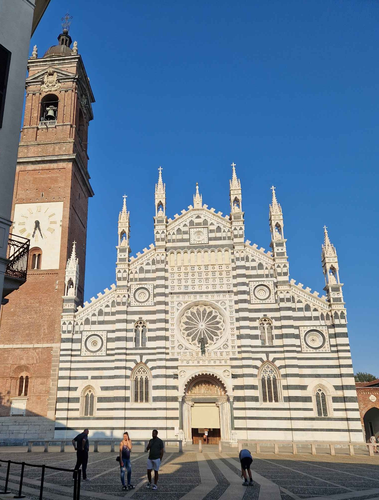
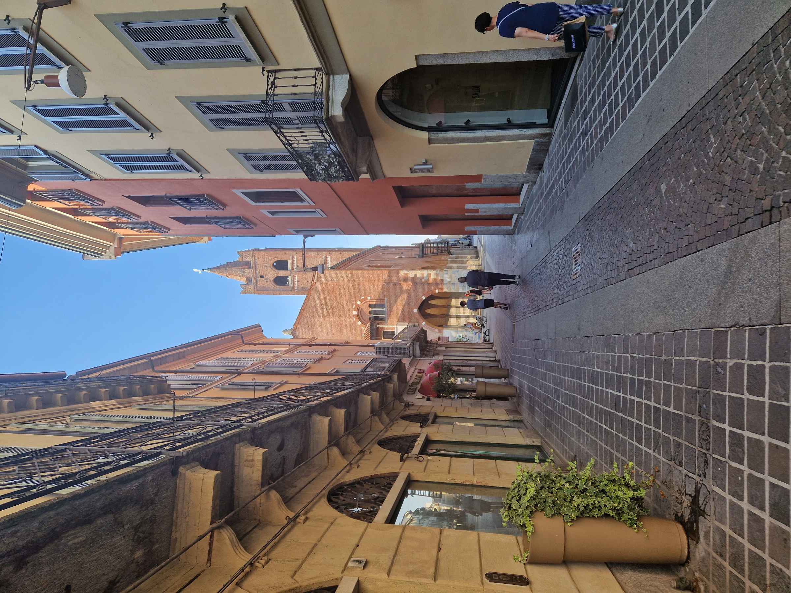

Gli Zavattari e la luce che nessuno guarda

Monza, nella percezione comune, si esaurisce in due soli referenti: l'Autodromo e, per chi ha qualche nozione in più, la Corona Ferrea. Come se tutto il resto non esistesse — o peggio, come se non meritasse di esistere.
Basta entrare nel Duomo per rendersi conto dell'enormità di ciò che viene ignorato. La cappella di Teodolinda custodisce uno dei cicli pittorici del tardo gotico internazionale più straordinari della Lombardia: gli affreschi degli Zavattari, realizzati a metà Quattrocento, hanno una qualità narrativa e una ricchezza cromatica che in molte città "maggiori" semplicemente non si trovano più, consumate dal passaggio di milioni di occhi distratti.
Sono lì, quasi indisturbati, in una luce che li tratta con rispetto. Non c'è la mediazione di file ordinate, di audioguide obbligatorie, di souvenir all'uscita. C'è solo l'affresco, la pietra, e il silenzio di una chiesa di provincia nelle ore feriali.

È un paradosso che vale la pena custodire: le cosiddette città "minori" offrono spesso un'esperienza più pura del patrimonio artistico, proprio perché non sono state distorte dalla pressione del turismo industriale. Vedere un ciclo del Quattrocento in una cappella semideserta, senza fretta, tornandoci più volte in stagioni diverse per osservare come cambia la luce — è un privilegio che quasi nessuno riconosce come tale.
Forse perché una città "minore" è semplicemente una città che non ha avuto il proprio Vasari: qualcuno che ne narrasse le meraviglie con abbastanza autorevolezza da inserirle nel canone. Non un difetto dell'opera. Un incidente della storia della critica.